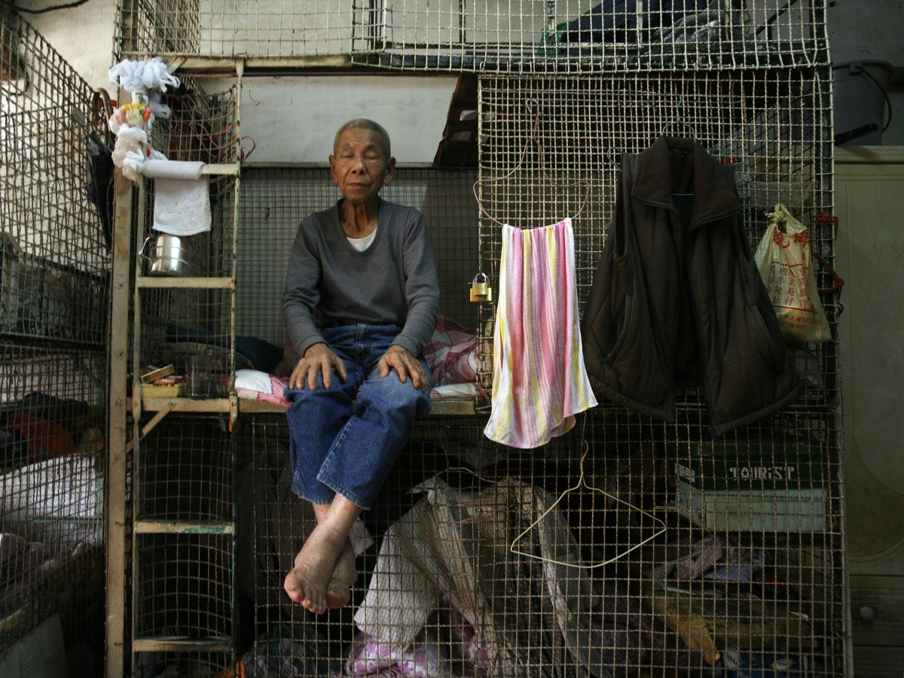

The Cage Homes of Hong Kong
Compared to the World
Hong Kong is known to have one of the most expensive living costs in the entire world, beaten out by Paris and Singapore.
Top Ten Most expensive cities to live in
- 1st Paris
- 2ndSingapore
- 3rdHong Kong
- Zurich
- Geneva
- Osaka
- Seoul
- Copenhagen
- New York
- Tel Aviv
What are the Cage Homes?
The photo above taken by Bobby Yip is an example of what a typical Cage Home in Hong Kong looks like. They are on average two metres long and one metre wide, for a cage home of this size it can cost approximately 300-400 Canadian dollars. For every room that houses a cage home there could be at least another 5 people that live in the shared space.
Why do people live here?
With Hong Kong's economy becoming more expensive for the lower income households, families resort to living in cramped places just to have somewhere to call a place a home in a city that makes it difficult for lower income families.